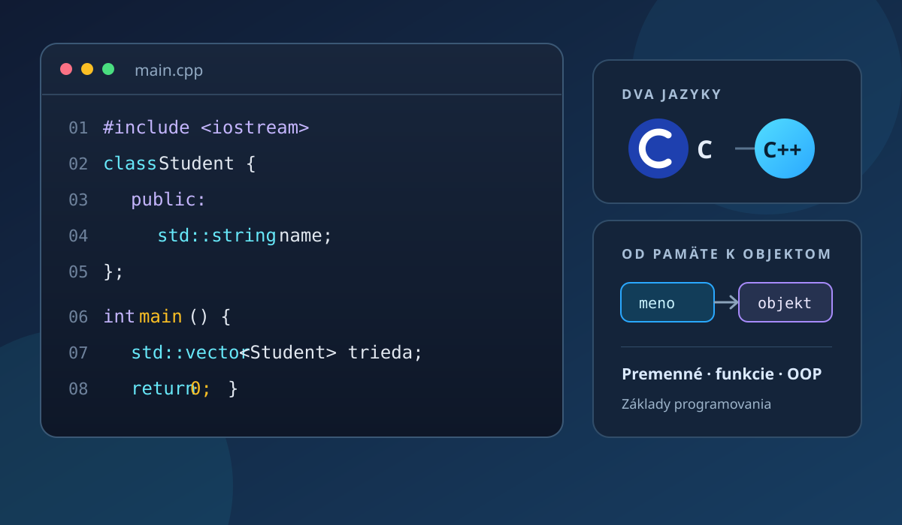

Kurz je dostupný
Git
Verzovanie kódu: úvod do Gitu, commity, vetvy a správa zmien v repozitári.
Celky: základy a história · vetvy a spolupráca · správa repozitára
Otvoriť kurz Gitu
Kurz je dostupný
Python
Výučbové materiály, prednášky, videá a testy z Pythonu a algoritmizácie.
Celky: úvod · algoritmizácia v Pythone · programovanie všeobecne · opakovanie
Otvoriť kurz
Materiály a test
C/C++
Základy jazyka C, interaktívny test a pripravované témy jazyka C++.
Celky: C · C++ · nadväzujúce moduly a projekty
Otvoriť C/C++
Pripravujeme · osnova hotová
Win32 API
Pripravujeme materiály ku kurzu tvorby aplikácií pre Windows.
66 vyučovacích hodín · 4 tematické celky
Celky: vstup · objektové programovanie · prostredie · projekty
Pozrieť štruktúru prednášok